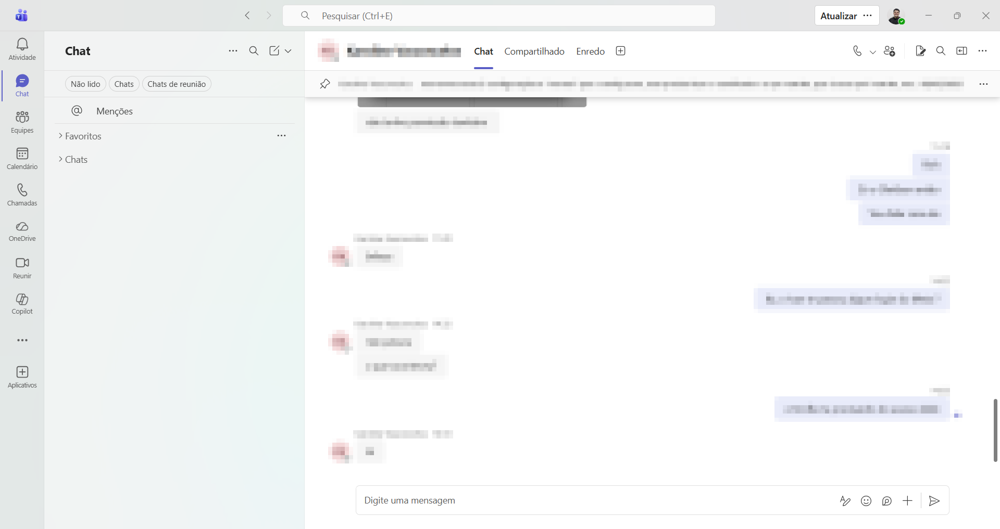
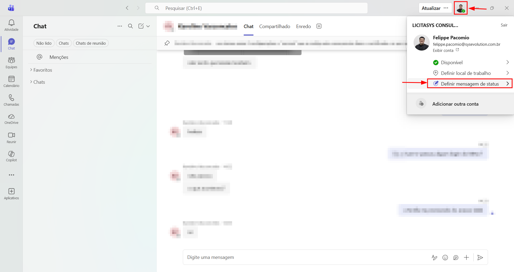
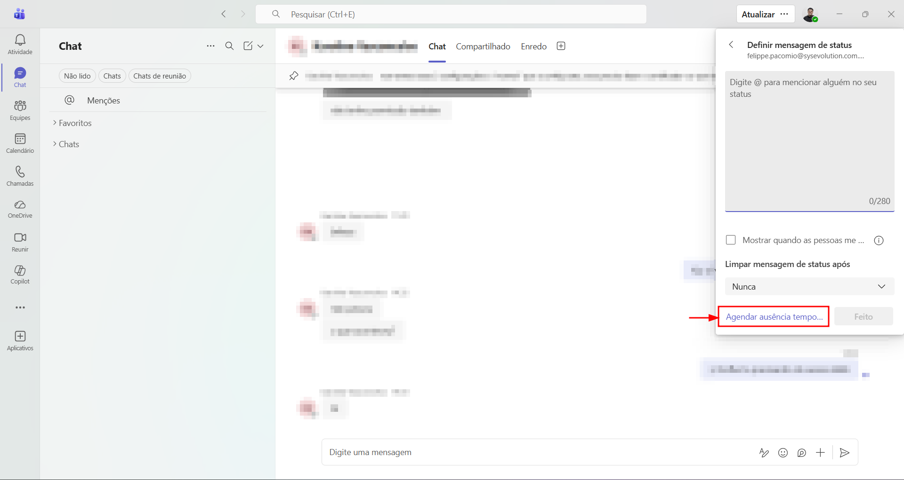
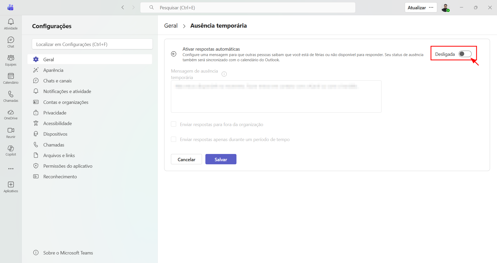
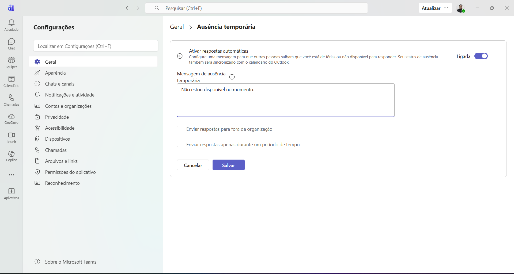
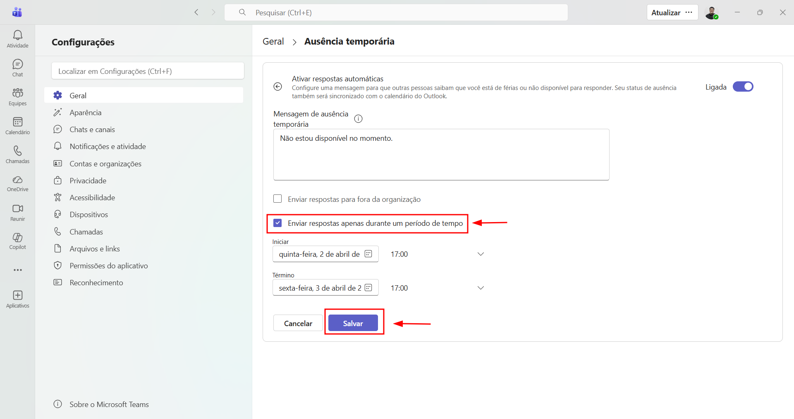

Como habilitar a ausência temporária
no Teams e no Outlook
Configure respostas automáticas para informar seus colegas quando você estiver ausente.
Este guia detalha os passos para habilitar a ausência temporária diretamente pelo Microsoft Teams. Ao ativar essa função, uma mensagem automática será exibida para todos que tentarem entrar em contato com você pelo Teams ou pelo Outlook, informando sobre sua indisponibilidade.
Abrir o Microsoft Teams
Abra o Microsoft Teams no seu computador. Certifique-se de que você está logado com sua conta corporativa.

Acessar as configurações de status
No canto superior direito do Teams, clique no ícone da sua foto de perfil. No menu que aparecer, clique em "Definir mensagem de status".

Agendar ausência temporária
No popup que será exibido, localize o canto inferior e clique em "Agendar ausência temporária".

Ativar as respostas automáticas
Na tela de configuração de ausência, clique no botão para ativar as respostas automáticas. Isso habilitará os campos de configuração.

Escrever a mensagem de ausência
No campo de texto, escreva a mensagem que será exibida automaticamente sempre que alguém tentar entrar em contato com você pelo Teams ou enviar um e-mail pelo Outlook.

Programar o período de ausência
Para definir um período específico, marque a opção "Enviar respostas apenas durante um período de tempo" e selecione a data e hora de início e término da sua ausência.

Pronto!
A mensagem de ausência temporária será exibida para todos os colaboradores dentro da Sys que tentarem entrar em contato com você pelo Teams ou pelo Outlook.
📋 Observações
Em caso de dúvidas ou problemas durante o processo, entre em contato
com a equipe de Service Desk nos canais:


Também estamos disponíveis no Microsoft Teams.